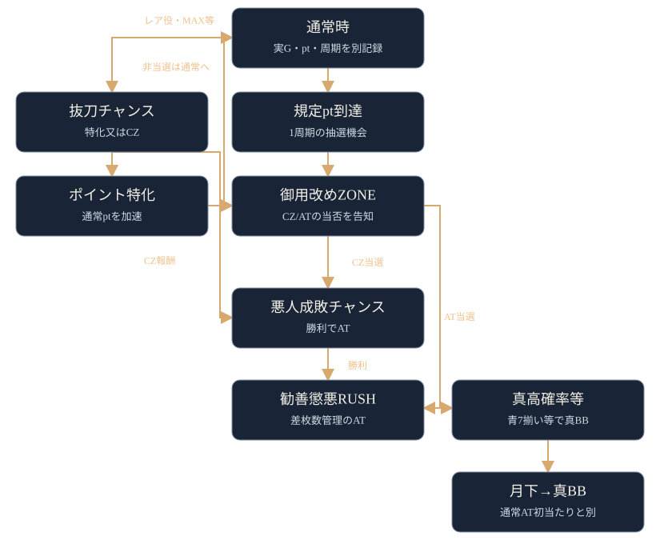

設定とモードの示唆を分けて記録
ATやCZの終了時、ポイント特化ゾーン終了時などにPUSHが淡く明滅したら押し、御白洲ビジョンの表示を確認します。キャラ・気配の文言・記号・色を残しましょう。設定、CZモード、規定ポイント、対戦相手は別の示唆です。F01
数値を比べるときはCZ・AT初当たりの分母を通常ゲーム数にします。抜刀メーターMAXからの当選は、AT終了後初回と5周期目を分子・分母から除外。レア役契機の抜刀は別に数えます。M01
確認する場面 →機種ガイド / 真打 吉宗
真打 吉宗の設定別確率・終了画面・ボイス、御白洲ビジョンの文言、周期とポイント、CZの相手、天井と真BB後の例外を条件付きで確認できます。
ATやCZの終了時、ポイント特化ゾーン終了時などにPUSHが淡く明滅したら押し、御白洲ビジョンの表示を確認します。キャラ・気配の文言・記号・色を残しましょう。設定、CZモード、規定ポイント、対戦相手は別の示唆です。F01
数値を比べるときはCZ・AT初当たりの分母を通常ゲーム数にします。抜刀メーターMAXからの当選は、AT終了後初回と5周期目を分子・分母から除外。レア役契機の抜刀は別に数えます。M01
確認する場面 →やめる前はAT/CZ終了後のPUSHとメニュー、ステージ、周期・ポイント、抜刀メーター、千両箱を確認します。通常のAT/CZ後は状態確認後の即ヤメも1周期目の天国確認も媒体が挙げる選択肢ですが、1周期は固定ゲーム数ではありません。F02I03
真BB後は通常AT後と分け、128G以内に告知される引き戻しの可能性と下パネル明滅を確認します。月下ノ花道は真BBの準備区間で、最大40Gの媒体記載があります。128Gで必ず当たるわけではなく、前兆や強い示唆を残したまま一律に終了する目安でもありません。F02I06
天井・やめどき →ATやCZの終了時、ポイント特化ゾーン終了時などにPUSHが淡く明滅したら押し、御白洲ビジョンの表示を確認します。キャラ・気配の文言・記号・色を残しましょう。設定、CZモード、規定ポイント、対戦相手は別の示唆です。F01
数値を比べるときはCZ・AT初当たりの分母を通常ゲーム数にします。抜刀メーターMAXからの当選は、AT終了後初回と5周期目を分子・分母から除外。レア役契機の抜刀は別に数えます。M01
「濃厚」「濃厚!?」は出典媒体の調査表現です。メーカー公式の設定保証へ置き換えず、短時間の当たりや一度の示唆だけで設定を断定しないようにしましょう。
| 設定 | CZ初当たり | AT初当たり | 抜刀MAX→抜刀チャンス | CZ当選時の柳生 |
|---|---|---|---|---|
| 1 | 1/313.0 | 1/488.9 | 20.31% | 3.70% |
| 2 | 1/303.0 | 1/471.5 | 22.27% | 3.90% |
| 3 | 1/283.5 | 1/438.5 | 22.27% | 4.70% |
| 4 | 1/267.1 | 1/398.1 | 24.22% | 6.20% |
| 5 | 1/256.9 | 1/377.0 | 24.22% | 7.81% |
| 6 | 1/250.6 | 1/354.9 | 25.78% | 8.70% |
根拠：M01I01H01。確率の分母は通常ゲーム数。MAX当選率の分母は対象となるMAX回数、分子はそこから当選した抜刀チャンス。AT終了後初回と5周期目は分子・分母とも対象外。レア役からの抜刀は別記録。柳生は柳生選択回数÷CZ当選回数で、媒体が明示していない除外条件を補いません。通常時CZの柳生と、AT中バトルの柳生は別です。
| 項目 | 何を・いつ・どう確認 | 示唆・確度 | 集計条件・短時間の限界 |
|---|---|---|---|
| CZ/AT | 当選契機と通常Gを記録 | 設定差のある掲載数値 | 総Gを分母にしない。連続区間・真BB連を初当たりに混ぜない。短時間の良否だけで設定を断定しない |
| 抜刀 | MAXごとに周期・AT後何回目・当否を記録 | 設定差のある掲載数値 | 上記の除外。設定差は20〜26%ほどで、少数回では振れやすい |
| 柳生 | CZ開始時の相手を記録 | 設定差のある掲載数値 | 初期選択を数える。数回のCZでは比較が難しい。先の相手示唆も記録する |
| 御白洲キャラ | 特化終了/CZ敗北/AT終了等でPUSH | 吉宗＝基本、越前＝偶数、天英院＝高設定示唆 | 「設定系キャラの中の比率」と「全PUSH中の比率」を混ぜない。1回で偶数/高設定確定ではない M03F01 |
| 終了画面 | AT終了時の月・人物を確認 | 月・人物の表。媒体の濃厚表記 | 宇宙宝船演出後の専用画面を出現率のサンプルから除く N03M01 |
| 特定枚数表示 | AT中の専用「○枚突破」表示を確認 | 456＝4以上濃厚!?、555＝5以上濃厚!?、666＝6濃厚!? | 普通にその枚数へ達しただけでは該当しない。出なかったことを低設定の証拠にしない N04I01 |
| 真BBボイス | 宝船パートでレア役→全リール停止→PUSH | 奇偶・高設定・特定設定以上 | 同じ成立契機で何度も再生した分を複数サンプルにしない。キャラパートへ無条件に適用しない M08N05 |
| トロフィー | AT・真BB終了時、リール左横を確認 | 色の候補は下記、媒体間で確度差 | 不出現からの否定判別をしない。色を正確に記録 M09I01 |
| メニュー | 非遊技時OK、周期切替等で再確認 | 設定/モード/敵の種類。詳細は参考扱い | 同じ画面を開き直しただけで試行を増やさない M04N06 |
| 画面 | 示唆 | 設定1 | 2 | 3 | 4 | 5 | 6 |
|---|---|---|---|---|---|---|---|
| 月なし | 基本 | 93.0% | 87.5% | 86.5% | 81.0% | 78.0% | 75.0% |
| 三日月 | 高設定示唆・弱 | 5.0% | 7.5% | 7.5% | 10.0% | 10.0% | 10.0% |
| 満月 | 高設定示唆・強 | 2.0% | 3.0% | 4.0% | 6.0% | 8.0% | 10.0% |
| 大岡越前 | 2以上濃厚!? | — | 2.0% | 2.0% | 2.0% | 2.0% | 2.0% |
| 柳生 | 4以上濃厚!? | — | — | — | 1.0% | 1.0% | 1.0% |
| 大奥 | 5以上濃厚!? | — | — | — | — | 1.0% | 1.0% |
| 吉宗 | 6濃厚!? | — | — | — | — | — | 1.0% |
宇宙宝船後を除く。表の根拠はN03H01M01。濃厚!?の慎重な表現はI01による。—は当該掲載表に選択なし。高設定示唆の画面は低設定でも出ます。真BB終了画面への適用は区間と専用画面を確認し、AT終了率表へ無条件に合算しません。
| キャラ・媒体掲載文言 | ランプ | 示唆 |
|---|---|---|
| 葵「流石でございます！」 | 白 | 奇数・弱 |
| 桜「どごさ目いってんだが～？！」 | 白 | 奇数・強 |
| 翠「やるじゃない！」 | 青 | 偶数・弱 |
| 紅「早く捕まえてぇ～！」 | 青 | 偶数・強 |
| 天英院「やるではないか！」 | 黄 | 高設定・弱 |
| 天英院「今宵は特別な日になる気がしておるぞ！」 | 黄 | 高設定・強 |
| 吉宗「胸が高鳴るのう！！！」 | 緑 | 2以上濃厚 |
| 越前「この越前！この上ない喜びである！」 | 紫 | 4以上濃厚 |
| 吉宗「これで江戸も安泰じゃ！はっはっはっ！」 | 赤 | 5以上濃厚 |
| 吉宗・越前・天英院「江戸を守る！」 | 虹 | 6濃厚 |
文言とランプはM08に合わせた表記。なな徹・一撃は笑い声の末尾を「はっはっは！」と記載しており、音声の厳密な文字起こしは未確認です。意味・設定対応の不一致は確認されていません。色だけで白2種・青2種・黄2種を区別できません。
トロフィーの色対応は、銅2以上／銀3以上／金4以上／イナズマ5以上／虹6。スロマガ専用ページM09は濃厚と掲載。一撃I01は「他機種を参考にした推察」、なな徹設定まとめも従来機種からの予想です。公式確定表にはしません。色対応を読む際は、媒体ごとの確度差も確認してください。
| メニューの表示 | スロマガM04の掲載候補 | 他媒体との違い・扱い |
|---|---|---|
| 吉宗／越前／天英院 | 基本／偶数!?／高設定!? | 一撃・なな徹は詳細不明。御白洲と同じ意味と確定させない |
| 翠＆葵 | 通常B以上のチャンス!? | 同上。濃厚にはしない |
| 桜＆紅 | 通常B以上!? | 同上 |
| 4人集合 | 天国!? | 同上。御白洲4人の「当該or次周期」と混同しない |
| 鼠小僧＆武器商人 | どちらか!? | 同上 |
| 和入道＆姉御 | どちらか!? | 同上 |
| 悪人集合 | 柳生!? | 同上。通常時に表示されるものとAT終了画面の集合を区別 |
通常状態の弱チェリー・弱スイカ・弱チャンス目は各1/118.1、強3役は各1/1092.3で、資料では全設定共通。M10N07。高確やCZでは逆押しによる出現・変換があり、見た目の役を通常状態の確率へ一括比較しません。共通ベルの全設定解析値を確認したという意味でもありません。
スロマガの4月17日更新の実戦記事M02では、通常時共通ベルは設定1が46/5483G（1/119.20）、設定6が52/4565G（1/87.79）。ダイトモの通常時自動カウントを使うと記載されています。これは少数の実戦値で、設定2〜5を補間しません。停止形だけによる完全な識別手順は参照資料では確定できないため、実測するならダイトモの定義・通常Gを合わせます。
同記事は、規定ptの浅さ、人馬一体の選択、規定周期、敵の選択も考察。人馬一体は昇格を除く15/156対30/155という実測で、高設定優遇の可能性を論じています。設定別の解析率とは別です。御白洲の天英院比率は当該実戦で大差がなく、一度の出現で決めない説明にも使えます。終了画面は後日更新された専用解析表も確認してください。
AT直撃の設定別解析値、直撃から除外すべき契機の完全表、周期/ptモード移行率の設定別数表は参照資料では数値未確認。通常Cの規定周期AT当選、ゲーム数天井、特殊な直接当選等の区別を先に記録します。
| 管理対象 | モード | 上限・恩恵 | 更新・注意 |
|---|---|---|---|
| CZまでの周期 | 通常A | 最大6周期、基本CZ・稀にAT | CZ/AT終了時に5回先のモードまで振り分け。5周期先という意味ではない |
| 同上 | 通常B | 最大4周期、基本CZ・稀にAT | 同上 |
| 同上 | 通常C | 最大4周期、規定周期でAT濃厚 | 「4周期目まで必ず待つ」の意味ではない |
| 同上 | 天国 | 1周期、基本CZ・稀にAT | 1周期＝固定G数ではない |
| 1周期の必要pt | 夜回りA | 最大600pt | 設定変更/周期切替/CZ失敗/AT終了で抽選 |
| 同上 | 夜回りB | 最大600pt | B終了後はD濃厚 |
| 同上 | 夜回りC | 最大300pt | CZモードCとは別 |
| 同上 | 夜回りD | 最大200pt | CZ天国と同義ではない |
根拠：M05M06N25N26。周期モードは設定変更時も抽選対象で、真BB後はB以上・Cの振り分け優遇。通常Aで6周期が選ばれた後は「次回の通常A」が最大4周期へ短縮という媒体の説明を残します。「次の周期が4」や「すべてのAT後が4」と書き換えません。
周期抽選に非当選なら次の周期へ。通常時の規定ptは100刻みで100〜600。実G＝レバーを叩いた回数、pt＝役等で増えるカウンター、周期＝規定pt到達を単位とする抽選回数です。周期切替時の超過pt持越しや各契機の表示リセットの全仕様は参照資料では未確認です。
| 通常時の成立役等 | 夜回りポイント・役割 |
|---|---|
| ハズレ・ベル | 1pt |
| リプレイ | 5pt以上 |
| レア役 | 10pt以上。抜刀や虎/龍の抽選もある |
| 虎実体化 | 獲得ptが2倍 |
| 龍実体化 | レア役高確。虎と同時の可能性もある |
| 百花繚乱チャンス | 5G、平均約90pt、レア役高確、千両箱獲得/昇格を抽選 |
| 人馬一体チャンス | 5G、平均約230pt、同上の上位特化 |
根拠：M06N09N10N11。平均ptは毎回の最低保証ではありません。特化中の弱役は箱のチャンス、強役は獲得/昇格濃厚。箱は後述のAT開始時に解放するもので、単なる通常ポイントと合算しません。
下表の共通操作A＝ポイント特化終了時・CZ敗北時・AT終了時などのPUSHが淡く明滅する機会に押下。F01。同じキャラのメニュー画面へ適用しないこと。確認日：2026年10月18日。手配書は末尾の「？」と「！」、夜回りは冒頭の語句に注目してください。人数や背景も区別して読みましょう。
| 表示の正確な文言・識別 | 出現場面・操作 | 示唆対象 | 内容 | 適用範囲・注意 | 出典 | 確認日 |
|---|---|---|---|---|---|---|
| 悪人の気配？／黒 | A | 相手 | 50%で武器商人以上 | 次回CZ。CZの成功率50%ではない | I02 / M03 | 10/18 |
| 極悪人の気配？／黒 | A | 相手 | 50%で柳生 | 次回CZ | I02 / M03 | 10/18 |
| 悪人の気配！／緑 | A | 相手 | 武器商人・姉御・柳生のいずれか濃厚!? | 次回CZ。黒の？と区別 | I02 / M03 | 10/18 |
| 極悪人の気配！／赤 | A | 相手 | 柳生濃厚!? | 次回CZ | I02 / M03 | 10/18 |
| ほどなく夜回りの気配 | A | pt | 規定300pt以内濃厚 | 残り300ptを保証する表記ではない | N01 / M03 | 10/18 |
| 間もなく夜回りの気配 | A | pt | 規定200pt以内濃厚 | 同上。100/200の範囲 | N01 / M03 | 10/18 |
| 近くに夜回りの気配 | A | pt | 規定100pt以内濃厚 | CZ当選を意味しない | N01 / M03 | 10/18 |
| おみくじ「末吉」 | A | CZモード | B以上に期待 | 示唆止まり | I02 / M03 | 10/18 |
| おみくじ「小吉」 | A | CZモード | B以上濃厚!? | 最大4周期 | I02 / M03 | 10/18 |
| おみくじ「中吉」 | A | CZモード | C以上濃厚!? | C又は天国。直撃が必ず次の1周期とはしない | I02 / M03 | 10/18 |
| おみくじ「大吉」 | A | CZモード | 天国濃厚!? | 1周期 | I02 / M03 | 10/18 |
| 浮世絵：橋・昼 | A | 先の天国 | 5回中2回が天国濃厚!? | 5回先までのモード。2/5という次回当選確率ではない | I02 / N01 | 10/18 |
| 浮世絵：城下町・昼 | A | 先の天国 | 3回目までに天国濃厚!? | 3周期以内とは書かない | I02 / N01 | 10/18 |
| 浮世絵：城前・夕方 | A | 先の天国 | 2回目までに天国濃厚!? | 同上 | I02 / N01 | 10/18 |
| 浮世絵：城内・夜 | A | 先の天国 | 5回中3回が天国濃厚!? | 同上 | I02 / N01 | 10/18 |
| 大奥1人・葵 | A・ピンク背景 | 規定周期 | 6周期否定!? | 1周期や天国の保証ではない | I02 / M03 | 10/18 |
| 大奥2人・葵＆翠 | A・ピンク背景 | 規定周期 | 1・3・5周期がチャンス | 当選保証なし | I02 / M03 | 10/18 |
| 大奥3人・桜＆翠＆葵 | A・ピンク背景 | 規定周期 | 1・2・4周期がチャンス | 同上 | I02 / M03 | 10/18 |
| 大奥4人・紅＆葵＆桜＆翠 | A・ピンク背景 | 規定周期 | 当該又は次周期でCZ濃厚!? | スロマガは「2周期以内」表記。現在を含む範囲で掲載 | I02 / N01 / M03 | 10/18 |
| 大奥5人・天英院を含む | A・ピンク背景 | 規定周期 | 当該周期でCZ濃厚!? | メニュー4人天国!?と混ぜない | I02 / N01 / M03 | 10/18 |
| 瓦版「事件の香りでぇい！」 | A | 先の相手 | 以降3回のCZが武器商人以上 | 次の3周期の意味ではない | I02 / N01 | 10/18 |
| 瓦版「特ダネでぇい！」 | A | 先の相手 | CZ3回目までに柳生 | 次回柳生と限らない | I02 / N01 | 10/18 |
| 瓦版「号外！号外でぇい！」 | A | 先の相手 | CZ2回目までに柳生 | 同上 | I02 / N01 | 10/18 |
「○回先」の数え始め、途中のAT直撃によるスキップ/再抽選など細部の全条件は参照資料では確認できていません。内部の細かな管理方法は不明なため、示唆だけから残り回数を確定することはできません。人数表は人数と登場キャラを識別するもので、左からの配置順を保証する表ではありません。
| 表示・場面 | 意味 | 条件・注意 |
|---|---|---|
| AT/CZ/真BB後の奉行所 | CZモードB以上濃厚!? | いつでも奉行所なら同じという説明にはしない I02 |
| 大奥ステージ | 周期到達濃厚!? | CZ当選そのものではない I02 |
| 天守閣ステージ | CZ以上濃厚!? | 上記と分ける I02 |
| 夜回りpt・緑 | 周期到達濃厚 | 緑だけでCZ濃厚にしない M06 |
| 夜回りpt・赤 | 周期到達＋CZ濃厚 | ptの色であり、周期数の色とは別 M06 |
| 周期数・青 | 200pt台で周期到達濃厚 | 抜刀MAX当選法則も別に存在。色のある箇所を記録 M06M11 |
| 周期数・赤 | 当該周期の到達でCZ以上濃厚 | 既にAT当選したという表示ではない M06 |
| ptの発光開始：下2桁00/10/20/30/40/50 | 約63/30/55/30/55%／50は本前兆濃厚 | 一度に大量ptが加わった場合は開始位置を正確に識別できない M06 |
| 御用改めZONE最終オーラ | なし激アツ、黄低、緑中、赤CZ又はAT濃厚、紫は柳生CZ又はAT濃厚 | なしを0%としない。人数はオーラに伴って増える N12 |
| オーラが一度に2段階上昇 | CZ以上濃厚 | 最終色だけの話とは別 N12 |
| 御用改め17G目で連続演出へ | CZ以上濃厚 | 前兆突入からのG。通常の実G17ではない N12 |
| 火事→越前、殲滅→吉宗フラッシュ | 基本対応 | 矛盾ならCZ以上＋武器商人以上濃厚。フラッシュ1/2/3回でCZ以上／武器商人以上／柳生 N12 |
| 殲滅77%・デカPUSH | AT以上濃厚 | 77%勝率の解釈をしない N12 |
| 御用改め突入1G目PUSH | CZ突入期待度表示 | 押せばCZ濃厚ではない。消化中の振動等の成功告知とは別 I04 |
| 抜刀1G目PUSH | 成功告知ならCZ以上濃厚!? | 無反応をハズレ確定としない I04 |
| ステージチェンジ緑アイキャッチ | 示唆の可能性 | なな徹・一撃で詳細不明。メニューの緑と同義にしない N13I02 |
抜刀メーターはベル等で増え、10pt到達で抜刀チャンスを抽選。共通ベル時は50%でMAXに到達するという掲載です。AT後1回目、刀の緑オーラ、青の周期表示などの当選法則を一般の設定差抽選と分けます。抜刀チャンスは1Gの報酬告知で、ポイント特化又はCZ。レア役による昇格、スイカ契機なら人馬一体以上という条件も記録。M11N02D01
通常時の龍高確のBAR、CZ中のBAR、AT中のBARを一括処理しません。CZ中はAT＋御白洲ストック、AT中は真高確率が濃厚とされます。抜刀中のBARの詳細な独立抽選率は参照資料では数値未確認です。
| 千両箱の報酬 | 白 | 青 | 緑 | 赤 | 虹 |
|---|---|---|---|---|---|
| 50枚 | 90.6% | 78.1% | — | — | — |
| 100枚 | 4.7% | 9.4% | 64.8% | — | — |
| 200枚 | — | 2.3% | 9.4% | — | — |
| 300枚 | — | 0.4% | 1.6% | 25.0% | — |
| 御白洲チャンス | 4.7% | 8.2% | 14.8% | 25.0% | — |
| 真高確率 | — | 1.6% | 9.4% | 25.0% | — |
| 真BB | — | — | — | 25.0% | 100% |
AT開始時の解放報酬を条件とする表。B01N15。白/青所持だけで続行が必ず有利とは言えません。—は掲載振り分けなし。虹の真BB以外を保証へ読み替えず、箱自体の獲得/昇格率と報酬分布を分けます。

主要な流れ。ゲーム数天井等の例外は天井表を確認してください。
主要ルートの概略です。CZ間天井→CZ、AT間天井→AT、千両箱からの真BB等の例外は以下の表で補います。図の矢印は確率を表しません。
周期抽選、抜刀の一部、CZ間天井などから突入。「BARを狙え」が3回出るまで継続し、勝利でAT。総合期待度は約55%ですが、相手・成立役を平均した説明で、各ゲームの勝率でも全相手共通の勝率でもありません。I05N16
| 対戦相手 | 弱スイカ | 弱チェリー | 強レア役／BAR揃い |
|---|---|---|---|
| 鼠小僧 | 60.2% | 低 | 撃破濃厚!? |
| 和入道 | 低 | 60.2% | 撃破濃厚!? |
| 武器商人 | 大チャンス | 低 | 撃破濃厚!? |
| 姉御 | 低 | 大チャンス | 撃破濃厚!? |
| 柳生 | 大チャンス | 大チャンス | 撃破濃厚!? |
「大チャンス」「低」の未確認数値は埋めません。対応役の傾向は鼠小僧→武器商人、和入道→姉御、柳生は両弱役に対応という関係で、武器商人と姉御を一律の上下順位にしません。
CZの逆押し高確中は弱チェリー/弱スイカ各1/20.5、強チェリー/強スイカ/BAR各1/168、合算1/9.15という掲載。通常状態の役確率とは分けます。チャンス目の逆押し役への変換と、ナビなし出現時の扱いがあるため、順押し通常状態の小役名だけで計算しません。N16
BAR揃い勝利は御白洲チャンスのストック濃厚!?。対応役勝利・柳生勝利・勝利後レア役はストック抽選で、常にストック保証とは違います。赤！ナビはAT＋御白洲チャンス濃厚。失敗後は次のモード・ステージを確認し、CZに当たっただけでAT間天井がリセットされたとみなしません。I05
| 区間 | 主要仕様 | 通常時と混ぜない点 |
|---|---|---|
| 勧善懲悪RUSH | 差枚数管理、初期150枚＋α、純増約2.7枚/G | 40GがAT内の1周期。通常時pt周期とは別 |
| 御白洲チャンス高確 | 弱チェリー/弱スイカ等から移行、15G＋α | レア役そのものの高確と別 |
| 三桁上乗せ高確 | 規定リプレイ回数で移行、10G＋α、当選時100枚以上 | 上乗せ毎G保証ではない。当選率・全振分は参照資料では未確認 |
| 勧善懲悪チャンス | ATの40G周期等、3/4Gバトル、総合約45% | 通常時の悪人成敗チャンス約55%とは別 |
| 真高確率ジャッジ | バトル勝利後の1G。報酬レベルと成立役で抽選 | 小役成立で成功濃厚。総合約43%を各レベルに一律適用しない |
| 真高確率 | 10G＋α、枚数と特化Gを上乗せ。青7は1/168で真BB | 通常時の龍高確と別 |
| 真高確率 一撃 | 期待度約33%、チェリー/強役/青7で真BB、弱スイカなら継続 | 通常の真高確率の10G仕様と混ぜない |
| 月下ノ花道 | 真BBの権利獲得時等の準備区間、最大40Gという媒体記載 | 通常時の天国や引き戻しと別 |
| 真BIG BONUS | 純増約9枚/G、2000枚、前半宝船・後半キャラ | 1G連は月下経由。通常ATの初当たり回数に足さない |
| 究極鷹BREAK | 真BB当選時の一部、1000枚ループと次回真BBを含む強い契機 | 「その場で5000枚払出」や無条件の収益保証としない |
根拠：N15N17N18N19N20N21N22N23D01。通常ATを単純に「上位ATへ昇格」とまとめず、真BBと準備区間の名称・つながりを使います。有利区間リセット契機には実戦上の推測が残るため、その完全判定方法は掲載保留です。
AT内バトルは、鼠小僧/和入道3G約40%、姉御3G約60%、武器商人4G約60%、柳生4G約40%。柳生の勝率自体が最高なのではなく、勝利時の真高確率一撃の恩恵が強いという違いです。N17
| 成立役 | 通常ATの直乗せ当選 | 最低枚数 | 御白洲抽選・低確 | 御白洲抽選・高確 |
|---|---|---|---|---|
| 弱チェリー | 約40% | 20 | 7.6% | 32.0% |
| 弱スイカ | 約15% | 50 | 7.6% | 32.0% |
| 弱チャンス目 | 100% | 20 | 16.1% | 32.0% |
| 強レア役 | 100% | 50 | 38.4% | 100% |
上乗せと御白洲は別の抽選項目で、率を足して1回の総当選率にはできません。三桁高確・特化中へそのまま適用しません。D01N15
| 通常AT・直乗せ当選時の枚数 | 弱チェリー | 弱スイカ | 弱チャンス目 | 強レア役 |
|---|---|---|---|---|
| 20 | 48.6% | — | 60.8% | — |
| 30 | 25.6% | — | 30.6% | — |
| 50 | 17.0% | 61.1% | 6.9% | 82.3% |
| 100 | 5.7% | 28.8% | 0.6% | 15.1% |
| 200 | 1.6% | 5.1% | 0.4% | 1.5% |
| 300 | 0.9% | 2.5% | 0.4% | 0.7% |
| 500 | 0.6% | 2.5% | 0.3% | 0.4% |
条件は「当選した場合」。例として弱スイカの100枚28.8%を、スイカ成立の28.8%で100枚乗るという意味にしません。D01
| 真高確率の差枚上乗せ | 弱レア役 | 強レア役 |
|---|---|---|
| 50枚 | 63.3% | — |
| 100枚 | 31.8% | 80.0% |
| 200枚 | 3.3% | 13.5% |
| 300枚 | 1.1% | 4.3% |
| 500枚 | 0.5% | 2.2% |
同時に特化Gも加算されます。弱役は3/4/5/6/7/8/9/10G＝75.4/14.9/7.5/0.5/0.5/0.4/0.4/0.4%、強役は5/6/7/8/9/10G＝92.2/4.4/1.8/0.8/0.4/0.4%。真高確率一撃の真BB抽選とは別。N19
御白洲チャンスの報酬決定Gで弱役なら特殊上乗せ60.0%／真高確率（一撃）39.8%／真BB0.2%、強役なら真高確率（一撃）75.0%／真BB25.0%。これは御白洲に入る当選率ではありません。N24
真BB後半の1G連抽選は、非対応弱役約5.5%／対応弱役約30%、非対応強役約30%／対応強役は濃厚。前半のボイス抽選とは別です。通常の真BB連期待度約50%を全成立役に割り振りません。N21
AT終了画面では「泣きの一撃」の抽選があり、レア役なら枚数上乗せ、青7なら真BBという説明です。終了画面を見ただけで最終ゲームの結果を未消化のまま判断しないよう、最終ゲームの成立役と告知を確認しましょう。D01N15
やめる前はAT/CZ終了後のPUSHとメニュー、ステージ、周期・ポイント、抜刀メーター、千両箱を確認します。通常のAT/CZ後は状態確認後の即ヤメも1周期目の天国確認も媒体が挙げる選択肢ですが、1周期は固定ゲーム数ではありません。F02I03
真BB後は通常AT後と分け、128G以内に告知される引き戻しの可能性と下パネル明滅を確認します。月下ノ花道は真BBの準備区間で、最大40Gの媒体記載があります。128Gで必ず当たるわけではなく、前兆や強い示唆を残したまま一律に終了する目安でもありません。F02I06
| 対象・場面 | 管理対象／条件 | 恩恵・確認 | 注意 |
|---|---|---|---|
| 通常のAT間天井 | 実G・1500G＋α | AT | CZ当選だけをATと扱わない |
| 設定変更後 | AT間1000G＋α | AT | 朝イチの修練場は電源入切でも同じ。見た目だけで変更確定にしない |
| 真BB後 | AT間700G＋α | AT | 通常AT終了後すべてに適用しない |
| CZ間天井 | CZ間1000G＋α | 悪人成敗チャンス | AT保証ではない。媒体によって＋α省略あり |
| 周期天井 | A6/B4/C4/天国1 | CはAT、他は基本CZ | 実Gやptへ換算した固定天井を作らない |
| 通常Aで6周期選択後 | 次回通常Aは最大4周期 | 周期短縮 | 次回通常Aという媒体条件を残す |
| AT/CZ終了後 | 表示と状態を確認 | 即ヤメも1周期の確認も媒体の選択肢 | 天国約42〜43%は資料差。1周期は固定Gでない |
| 真BB終了後 | 引き戻し当選時は128G以内告知 | 下パネル明滅等を確認 | 128Gで必ず当たる意味ではない。前兆や示唆を残したまま一律終了しない |
| 月下ノ花道 | 真BB準備・最大40Gの媒体記載 | 真BBへ | 通常時として即ヤメする場面にしない |
| 千両箱保有 | 色とATまでの距離 | AT時に報酬解放 | 所持だけで必ず利益になるという判断はしない |
| 御白洲・メニュー示唆あり | 出現場所・適用範囲 | 相手/pt/モード/設定を分ける | どの表示も一律に続行指示へ置換しない |
| 前兆中・ポイント特化中 | 現在区間を確認 | 当否・区間終了を確認 | 期待値の非前兆開始条件と混ぜない |
根拠：I03F02N08N14M05。設定変更時は高モード選択が優遇されるという資料ですが、参照資料では確実な目視判別手順や設定別振り分け数値を確認していません。
狙い目はAT間Gだけでなく、CZ間G、周期、モード示唆、千両箱、開始状態とやめ条件で変わります。期待値の貸出・交換・持ちメダルなどの条件が揃わない数字は掲載していません。原資料を使う場合も計算条件まで確認してください。N08I03
対象は大都技研「真打 吉宗」（2026年4月導入）です。2025年の「吉宗」や「吉宗RISING」とは別機種として扱っています。O01O02
メーカー基本情報と解析媒体の調査を区別しています。数値未確認の項目は、抽選が存在しないという意味ではありません。メニュー・トロフィーの確度差、声のED中適用、先のモード示唆の細かな消化条件、pt持越し等は断定していません。動画本編・SNS原投稿を直接確認した情報としては掲載していません。